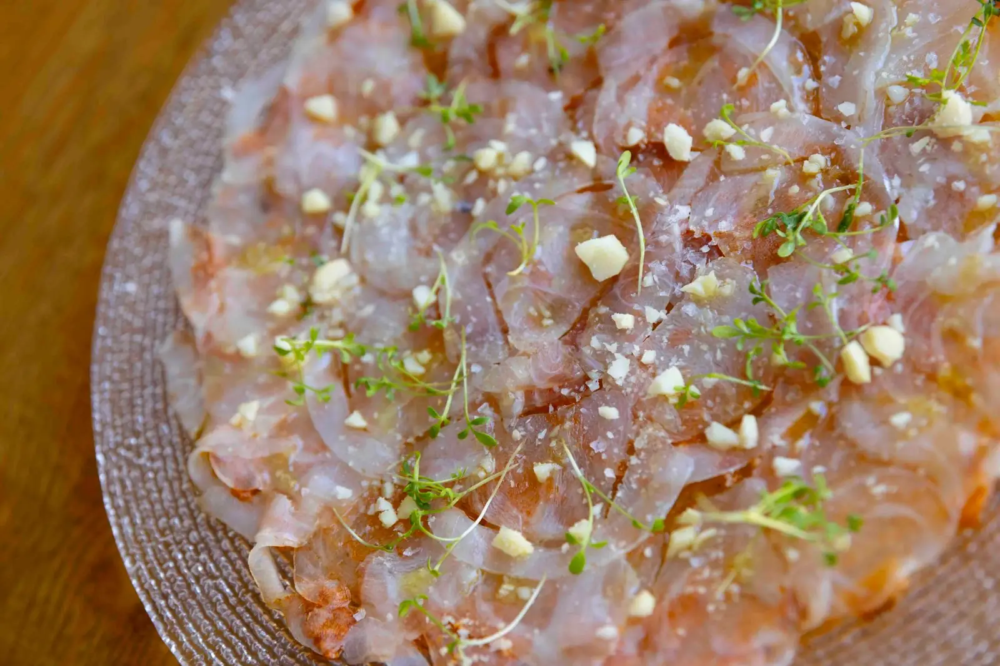
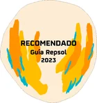
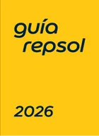
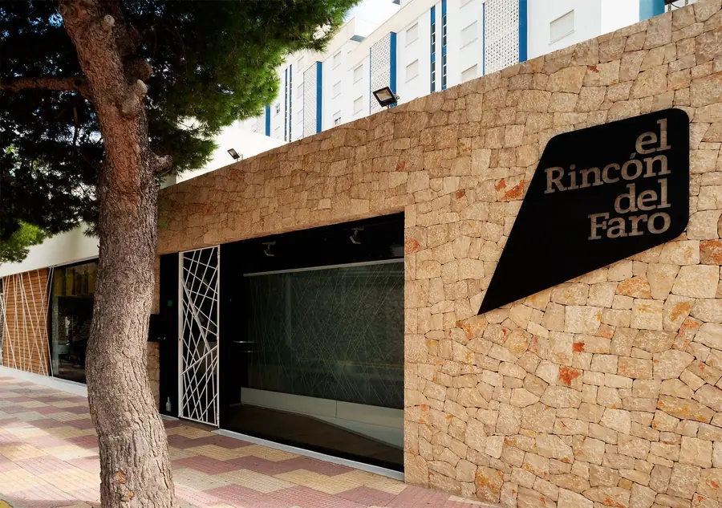
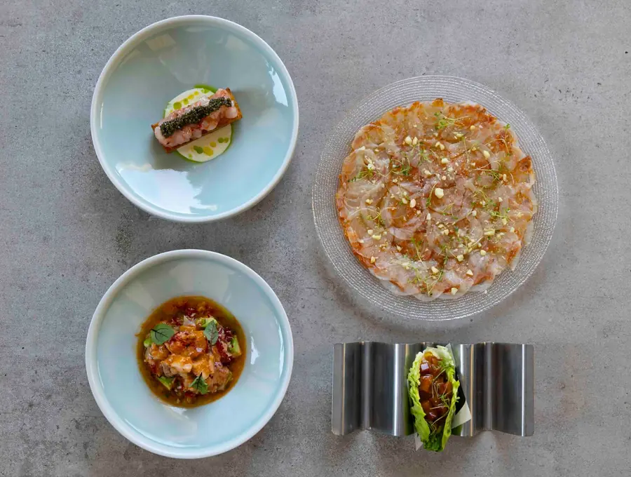
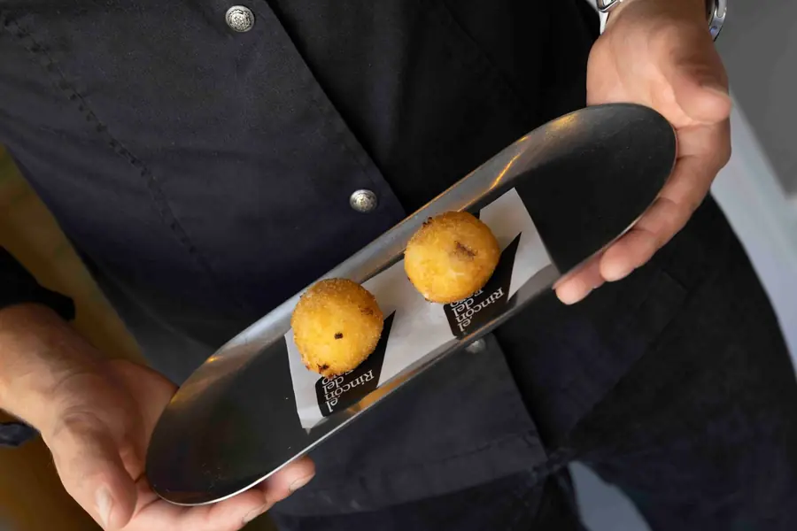
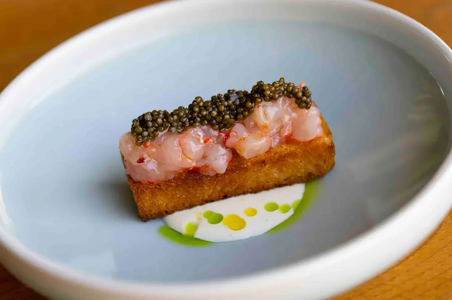

Arroces en Cullera desde 1982
Tradición y creatividad se encuentran en cada plato de El Rincón del Faro, con los arroces como una de nuestras señas de identidad.


Guía Repsol de 2023 a 2026. Más de 4.000 opiniones en Google, Tripadvisor y TheFork.
Nuestra cocina
Trabajamos con carnes selectas y pescado fresco de la lonja de Cullera, renovando nuestra carta cada temporada para seguir conquistando a quienes nos acompañan desde hace más de 40 años.
Arroces al horno, en paella y fideuàs, brasas, producto de lonja y una carta de vinos que puedes consultar desde el móvil.
«Perfecto los calamares. Super recomendable.»
«Servicio impecable, muy amable Jorge y el resto del equipo.»

Los arroces
El arroz es nuestra seña de identidad desde 1982: paellas, arroces al horno, melosos y fideuàs con producto de la lonja de Cullera y carnes selectas.
- Paëlla Valenciana19 €
- Nuestro arroz al horno en paella20 €
- Pato confitado, foie y boletus edulis22 €
- Secreto ibérico, foie y boletus edulis22 €
- Carabinero y rape28 €
- Bogavante azul y rape28 €
- Senyoret con rape, sepia y gamba22 €
- Fideuà del senyoret27 €
- Fideuà de pato confitado, foie y boletus edulis27 €
Precios por confirmar: la carta no indica si son por persona o por ración.
Nuestra carta
Producto de lonja, brasas y arroces. La carta cambia con la temporada. Precios según la carta publicada; sujetos a cambios. Los nombres de los platos se muestran en castellano, como en la carta impresa.



Para consultar los alérgenos de cada plato, tienes la carta completa con leyenda de alérgenos.
Carta de vinos
Consúltala desde el móvil, con su ficha de cada vino.
Regala una experiencia
Un bono regalo personalizable del Rincón del Faro, desde 50 €. El importe máximo lo decides tú, sea cual sea el número de comensales.
Cómo funciona
- Es necesario hacer reserva.
- Quien recibe el regalo acude al local con el código del bono y se lo muestra al personal de sala, que le indica el importe disponible.
Condiciones
- Importe mínimo: 50 €.
- El bono es de un único uso.
- Si se supera la cantidad del bono, la diferencia se abona en el local.
- Si no se consume el importe completo, el sobrante no se reembolsa.
- Válido durante tres meses desde la fecha de compra.
Cómo llegar y reservar
- Dirección
- Carrer Ciutats Unides, 1
46400 Cullera, Valencia - Teléfonos
- 961 72 45 63 / 606 58 30 01
- Horario
- Todos los días, de 10:00 a 23:30
Horario por confirmar con el restaurante.